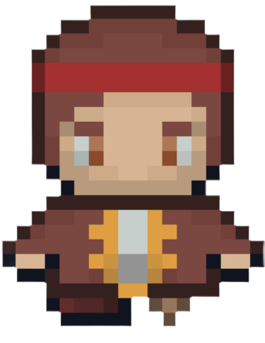

Press 'L' for Pirate Lars ->
<- or press 'R' for Pirate Ruby.
The dead Pirate Red Beard managed to hide his Treasure before being killed.
You need to use his Treasure Map to find the lost treasure. Just don't be caught by his crabs and the skeletons he tasked with proctecting his Treasure.
Use the UP and DOWN arrows to control your Privateer!
Music by Phil "Big Cheese" Magee //
Image by dgim-studio on Freepik